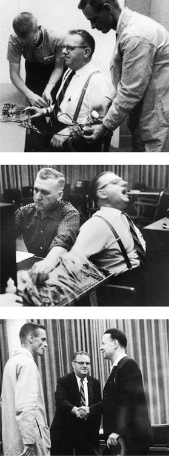

Not so long ago, the only part of the body that American teenage girls were likely to pierce was the ears—one hole per ear, enough to hold a single pair of earrings. For the vast majority of boys, piercing was not an option. Today, earrings are common for men. From teenage boys to male professional athletes to college students, a growing number of males now sport multiple earrings. Pressure to conform to the latest styles is especially strong among teenagers and young adults, among whom the need for group acceptance is often acute.
While sporting earrings or the latest style of jeans may seem relatively harmless, conformity to group pressure can lead to destructive behavior, such as drug abuse or even murder. For this reason, sociologists and social psychologists have long sought to understand why most people tend to go along with others and under what circumstances they do not.
Going Along with the Group: Asch’s Research
Some of the earliest studies of conformity to group pressures were conducted by psychologist Solomon Asch (1952). In a classic experiment, Asch asked subjects to decide which of three lines of different length most closely matched the length of a fourth line (Figure 6.1). The differences were obvious; subjects had no difficulty making the correct match. Asch then arranged a version of the experiment in which the subjects were asked to make the matches in a group setting, with each person calling out the answer in turn. In this version, all but one of the subjects were actually Asch’s confederates. Each confederate picked as matches two lines that were clearly unequal in length. The unwitting subject, one of the last to answer, felt enormous group pressure to make the same match. Amazingly, one-third of the subjects gave the same answer as the others in the group at least half the time, even though that answer was clearly wrong. They sometimes stammered and fidgeted when doing so, but they nonetheless yielded to the unspoken pressure to conform to the group’s decision. Asch’s experiments showed that many people are willing to discount their own perceptions rather than buck group consensus.
Obedience to Authority: Milgram’s Research
Another classic study of conformity was conducted by Stanley Milgram (1963). Milgram’s work was intended to shed some light on what happened in Nazi Germany during World War II. How could ordinary German citizens have gone along with, and even participated in, the mass extermination of millions of Jews, Romanies (Gypsies), homosexuals, intellectuals, and others whom the Nazis judged to be inferior or undesirable?
Figure 6.1
THE ASCH TASK
In the Asch task, participants were shown a standard line (left) and then three comparison lines. Their task was simply to say which of the three lines matched the standard line. When confederates gave false answers first, one-third of participants conformed by giving the wrong answer at least half the time.
Obedience is a kind of conformity, and Milgram sought to find its limits. He wanted to see how far a person would go when ordered by a scientist to give another person increasingly powerful electric shocks. So he set up an experiment that he told the subjects was about memorizing pairs of words. In reality, it was about obedience to authority. Milgram’s study would not be permitted today, because the deception of subjects and its potential for doing psychological harm would violate current university ethics standards.
The Milgram experiment required participants to “shock” the confederate learner (seated). The research participant (top) helped apply the electrodes that would be used to shock the learner. An obedient participant (middle) shocks the learner in the “touch” condition. More than half obeyed the experimenter in this condition. After the experiment, all the participants were introduced to the confederate learner (bottom) so they could see he was not actually harmed.
The subjects who volunteered for the study were supposedly randomly divided into “teachers” and “learners.” In fact, the learners were Milgram’s confederates. The teacher was told to read pairs of words from a list that the learner was to memorize. Whenever the learner made a mistake, the teacher was to give him an electric shock by flipping a switch on a fake but official-looking machine. The control board indicated shock levels ranging from “15 volts—slight shock” to “450 volts—danger, severe shock.” For each mistake, the voltage was to be increased, until it reached the highest level. In reality, the learner, who was usually concealed from the teacher by a screen, never received any shocks.
As the experiment progressed, the learner began to scream out in pain for the teacher to stop delivering the shocks. (The screams, which grew louder as the voltage rose, had actually been prerecorded.) Milgram’s assistant, who was administering the experiment, exercised his authority as a scientist and, if the teacher tried to quit, ordered the teacher to continue administering shocks. The assistant would say things such as “the experiment requires that you continue,” even when the learner was tearfully protesting—even when he shrieked about his “bad heart.”
The teacher was confronted with a major moral decision: Should he obey the scientist and go along with the experiment, even if it meant injuring another human being? Much to Milgram’s surprise, over half the subjects administered the shocks until the maximum voltage was reached and the learner’s screams had subsided into an eerie silence as he presumably died of a heart attack. How could ordinary people so easily obey orders that would turn them into possible accomplices to murder?
The answer, Milgram found, was surprisingly simple. Although it is obvious that soldiers in training will obey orders given by someone in a position of power or authority, ordinary citizens will often do the same—even if those orders have horrible consequences. From this experience, we can learn something about Nazi atrocities during World War II, which were Milgram’s original concern. Many of the ordinary Germans who participated in the mass executions in concentration camps did so on the grounds that they were just following orders. Milgram’s research has sobering implications for anyone who thinks that only “others” will bend to authority, but “not me” (Zimbardo, Ebbesen, and Maslach, 1977).